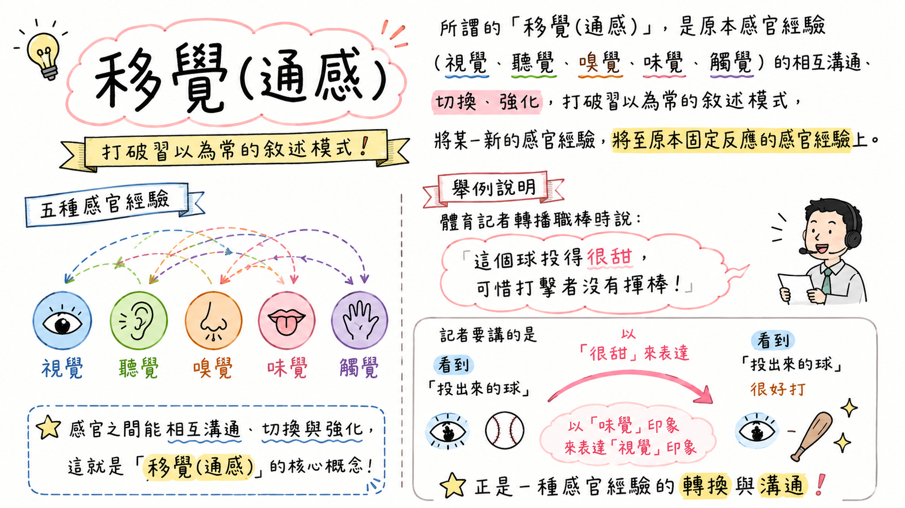

打破五感界線・喚醒文字感知
「聽得見陽光的咆哮，嘗得到月色的甘甜。」
移覺（通感）是文學中最具魔力的修辭技法。將視覺、聽覺、嗅覺、味覺、觸覺互相溝通切換，讓文字瞬間立體生動！
【精選教材圖解】移覺（通感）修辭概念架構大剖析

點擊放大全螢幕檢視
單元一：移覺（通感）核心定義與解題口訣
打破單一摹寫侷限，掌握感官經驗的交叉互感
什麼是「移覺（通感）」？
所謂的「移覺」（又稱通感），是原本感官經驗（視覺、聽覺、嗅覺、味覺、觸覺）的相互溝通、切換與強化。
打破習以為常的客觀敘述模式，將某一新的感官感受，轉移至原本固定反應的感官對象上，創造出奇妙深遠的藝術效果。
在古典詩詞、現代散文與日常流行語中皆隨處可見！
移覺 vs. 一般摹寫
一般摹寫：單一感官如實記錄（看到紅花寫紅花、聽到雷聲寫雷聲）。
移覺通感：跨感官借調重組！
移覺通感：跨感官借調重組！
❌「看見明亮的陽光」（純視覺摹寫）
✅「看見嘩啦嘩啦的陽光」（用聽覺的水聲表視覺陽光）
✅「嘗到一口酸澀的寂寞」（用味覺表心理/視覺感受）
✅「看見嘩啦嘩啦的陽光」（用聽覺的水聲表視覺陽光）
✅「嘗到一口酸澀的寂寞」（用味覺表心理/視覺感受）
會考破題兩步驟
面對移覺判讀題，請按照「黃金兩步驟」：
- 第一步【找本體】：作者原本要描寫的「事物本體」是什麼感官？（如：手風琴聲 ➔ 聽覺）
- 第二步【找媒介】：作者用了什麼「形容詞/動作」來修飾它？（如：長長的巷子 ➔ 視覺）
👉 結論：以「視覺」印象表達「聽覺」印象！
單元二：五感移覺星盤與快速導覽
👁️ 視覺（本體受體）
描寫對象為光影、白雲、月色、草原等。常借聽覺（嘩啦）、味覺（甜美）、觸覺（黏膩）來轉化。
👂 聽覺（本體受體）
描寫對象為琴聲、笑聲、蟬聲、鞋聲。常借視覺（長巷、銀幣、落葉）、觸覺（微風、烤火）來形容。
👃 嗅覺（本體受體）
描寫對象為髮香、氣味。常借味覺（清泉過唇）、視覺（骯髒）來轉化豐富意象。
👅 味覺（媒介形容）
以甜美、酒意、酸酸甜甜等滋味，生動勾勒月色、笑容、投球與跳舞姿態。
✋ 觸覺（媒介形容）
以黏膩、暖呼呼、清涼微風、陰冷寒意等肌膚觸感，描摹抽象光影與眼神。
單元三：30 句精選移覺典例圖鑑庫（全收錄）
各項標題皆保留，老師可邊講解邊點開【本體】、【媒介】與【解析】引導學生思考
單元四：會考神仙挑戰賽（移覺診斷闖關）
自我檢測！透過精選模擬題，秒懂會考試題陷阱
載入題目中...
測驗挑戰完成！
100 分
通感修辭國文神 🌟
太神了！五感流向與會考移覺題型全部精準破譯！
單元五：移覺魔法造句工坊（創意寫作實驗室）
點選主體與媒介，動態生成優美移覺現代詩與散文金句！
1. 選擇描寫對象（本體）
2. 選擇借調感官（媒介）
✦ AI 移覺造句生成成果 ✦
「窗外的陽光灑落下來，化作一口楓糖般甜美的甘醇。」
🎯 修辭解析：要描寫的是「陽光」（視覺），以「楓糖般甜美」（味覺）來修飾 ➔ 以「味覺」印象表達「視覺」印象。
單元六：移覺（通感）語文學習集練習神器
全套 30 句精熟記憶卡片、錯題自動收錄診斷、翻卡闖關模式